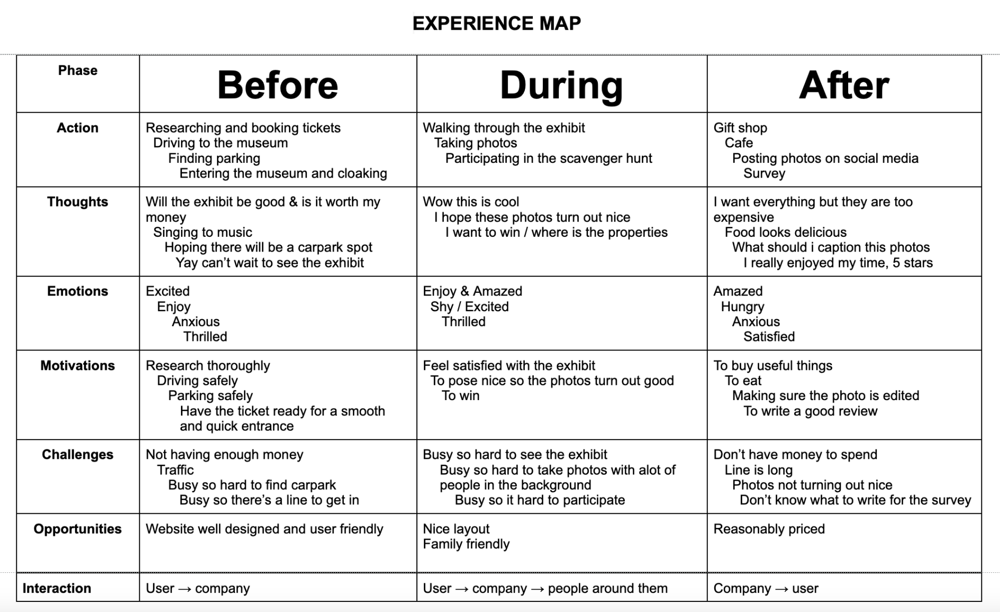
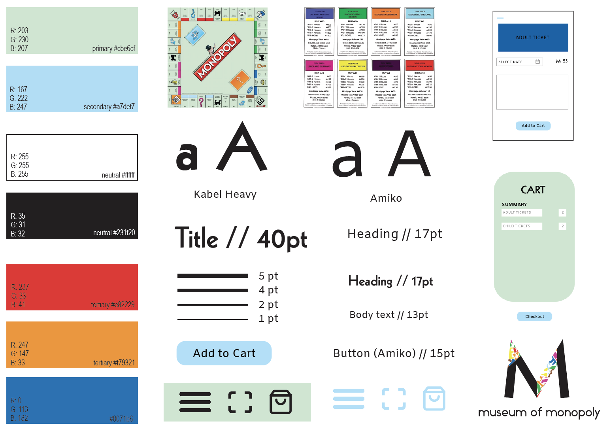

Monopoly Museum UX
Before / During / After
The task was to create a prototype app that would support and improve the project museum of.... The name of the museum I chose is Museum of Monopoly. The app was created to be used before, during, and after visiting a museum. Purchasing museum admission with an app is the before stage. The scavenger hunt and shooting pictures take place during stage. The next step is to conduct a survey about the visit which is the after stage. As my museum is dedicated to Monopoly, I preserve the essential elements, such as the colours, house cards, and figurines, that make Monopoly so recognisable.
This is an experience map that depicts what people might do, feel and experience before, during, and after visiting the Museum of Monopoly.

My museum features a variety of monopoly collections and is monopoly-focused. I had to create an app that would symbolise monopolies, and I did this by having the app feature a key monopoly characteristic. The player figurines and the primary colours red, orange, and blue are utilised throughout the apps to categorise children's, adult's, and concession tickets, respectively. The propotery cards, which also represent the game's feature of buying property are tickets to museums.

Axure Cloud Link: https://y6zj9k.axshare.com/#id=cqzdla&p=first